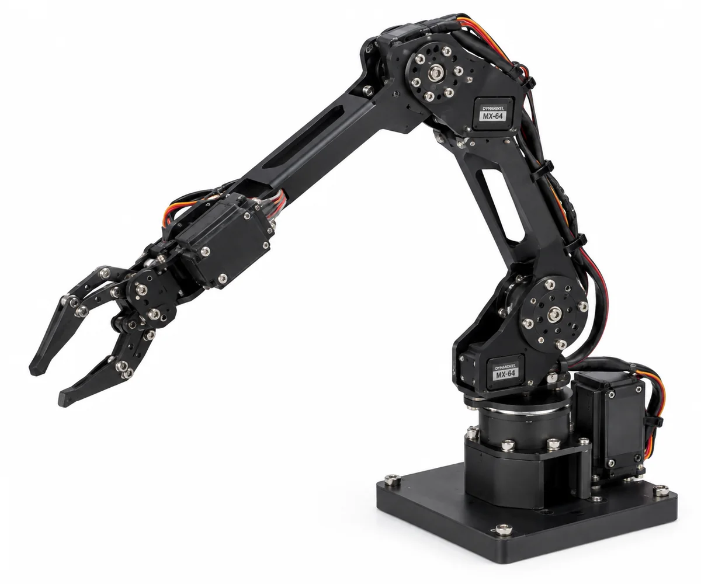

CAE / FEM
Static · Modal · Explicit Dynamics 모델링과 결과 비교
ROBOTICS & MECHANICAL R&D ENGINEER
유한요소해석(FEM) 기반 구조 검증, AI 대리모델과 역설계, 로봇 비전·제어 시스템 구현을 수행했습니다. 결과는 수치 비교와 반복 실험으로 확인하고 논문·학회·특허 형태의 산출물로 정리해 왔습니다.


ABOUT / ENGINEERING PROFILE

Yeungnam University · Robot System Lab · CAE · FEM-AI · Robotics
로봇공학 전공과 학부연구생 경험을 바탕으로 CAE 구조해석, 데이터 기반 모델링, 로봇 비전·제어를 프로젝트 단위로 수행했습니다. 해석이나 코드를 실행하는 데서 끝내지 않고 기준값과 비교해 오차를 확인하고, 결과를 설명 가능한 형태로 정리하는 것을 중요하게 생각합니다.
연구실에서는 논문 연구와 학회 발표뿐 아니라 산학협력 R&D 문서, CAE 스터디, 팀 프로젝트 운영에도 참여하며 기술 수행과 협업·문서화를 함께 경험했습니다.
Static · Modal · Explicit Dynamics 모델링과 결과 비교
FEM 데이터셋 구축, MLP 대리모델, SLSQP 역설계
카메라 기반 인식, Pan/Tilt 및 모바일 로봇 제어
논문·학회 발표·R&D 제안 문서로 결과 구조화
TWO FLAGSHIP CASES

FEM 데이터 생성부터 AI 대리모델, 역설계, FEM 재해석까지 하나의 검증 루프로 구성.
FEM · PyTorch · SLSQP · Re-analysis →▶ 7.7 s simulation선행연구 조건을 재현하고 material·mesh·contact·time-step 문제를 분리해 수치 모델을 안정화.
Literature Reproduction · Explicit Dynamics · Comparison →FLAGSHIP 01 · RESEARCH CASE / FEM-AI
구조해석 데이터에서 역설계와 논문화까지 연결한 CAE-AI 연구
반복 FEM 해석 비용을 줄이기 위해 DCF(Double Compound Flexure)의 형상·하중 조건과 구조 응답 간 관계를 학습하는 대리모델을 구축했습니다. 입력변수 정의 → 350개 FEM 데이터 생성 → MLP 학습 → 반복 평가 → SLSQP 역설계 → FEM 재해석의 전체 흐름을 직접 구성해 예측값이 실제 해석에서도 유지되는지 확인했습니다.
CAE-AI 선행연구 조사와 중앙 원형 홀 평판 파일럿을 통해 방법론을 검증한 뒤 DCF 문제로 확장했습니다.
힌지 형상 변수와 하중을 입력으로 정의하고 Static Structural / Modal Analysis 결과로 총 350개 FEM 데이터를 구축했습니다.
다중 구조응답을 동시에 예측하는 MLP를 구성하고 3개 random seed 반복 평가로 성능 변동을 확인했습니다.
Sequential Least Squares Programming(SLSQP) 최적화로 목표 변위를 만족하는 형상을 도출하고, 해당 설계를 FEM으로 다시 해석해 오차를 확인했습니다.
연구 목적, 방법론, 정량 결과, 한계와 향후 과제를 원고 구조로 정리해 결과와 판단 근거를 문서화했습니다.
Geometry & FEM modelPrediction validation중앙 원형 홀 평판의 ¼ 대칭 FEM 모델과 ANN 구조응답 예측 문제를 재현하며 CAE-AI 파이프라인을 먼저 익힌 뒤, 실제 정밀 메커니즘 문제로 난도를 확장했습니다.

높은 R²만 제시하지 않고 역설계된 형상을 다시 유한요소해석해 목표 변위와의 상대오차를 확인했습니다. 모델 성능 → 설계 도출 → 물리 기반 재검증으로 연결한 점이 이 프로젝트의 핵심입니다.
FLAGSHIP 02 · ENGINEERING CASE / EXPLICIT DYNAMICS
선행연구 재현에서 방탄 헬멧 적용까지 이어진 Explicit Dynamics 해석
영상에서 탄두 충돌 직후 plate 변형이 시간에 따라 진행되는 과정을 확인할 수 있습니다. 문헌 조건 재현에서 시작해 수치 모델 안정화와 헬멧 형상 적용까지 동일한 충돌 해석 workflow를 확장했습니다.
단순히 해석 결과를 얻는 것이 아니라, 선행연구를 기준으로 모델을 재현하고 결과 차이의 원인을 추적해 해석 조건을 보정했습니다.


논문 값을 그대로 옮겼을 때 발생한 EOS 및 Johnson–Cook 관련 문제와 time step too small 오류를 재료모델·mesh·contact·erosion 조건으로 나눠 확인했습니다. LS-DYNA용 EOS_Mie-Gruneisen 설정을 ANSYS Explicit 환경의 Shock EOS Linear로 재구성하고, 지나치게 작은 요소와 불필요한 contact를 정리하면서 모델을 안정화했습니다.

최종 plate impact 모델의 변형 깊이를 문헌 실험값과 수치해석 결과에 비교해 재현 수준을 정량적으로 확인했습니다. 차이가 발생하면 모델링 가정과 수치조건으로 돌아가 원인을 점검했습니다.


plate–projectile 재현 과정에서 정리한 충돌조건과 재료모델을 단순 헬멧 형상에 적용해 394 m/s 조건에서 응력 분포와 구조 거동을 탐색했습니다.

개인 해석에서 끝내지 않고 CAE 스터디를 주도하며 모델링·오류 해결 과정을 공유했고, 연구실 장비 관리 경험을 통해 해석 업무와 연구환경 운영을 함께 경험했습니다.
WHAT I LEARNEDCAE에서 중요한 것은 Solver를 실행하는 것이 아니라, 결과를 신뢰할 수 있도록 모델링 가정과 수치조건을 설명할 수 있는 것입니다.
RESEARCH & ENGINEERING EXPERIENCE
영남대학교–㈜에듀원큐 산학협력 R&D 기획에서 사족보행·휴머노이드 협업 순찰과 관제 AI 플랫폼의 사업계획 및 기술구성 문서 작성·정리에 참여했습니다. 기관별 역할, 현장 실증 시나리오, On-Device AI·로봇 H/W·자율주행 기술을 하나의 과제로 구조화하는 과정을 경험했습니다.
민간 CAE 구조 전문가 시험을 목표로 스터디를 운영하며 기출문제와 구조해석 절차를 반복 학습했습니다. 해석 문제를 함께 풀이하고 모델링·결과 해석 과정을 구성원에게 설명하며 CAE 기초와 문제 해결 과정을 체계화했습니다.
휴머노이드 팀 리더로 활동하며 역할 분담과 진행 상황을 조율하고, 팀 단위 구현 과제를 끝까지 진행하는 경험을 쌓았습니다.
Robot System Lab 학부연구생으로 연구·실험·문서화에 참여했고, NTIS 국가연구자 등록 및 연구실 장비 관리 경험을 통해 연구환경 운영도 함께 경험했습니다.
기존 DCF 연구 아이디어를 기업과제 형식으로 확장해 문제 정의, 연구목표, 수행 방법 및 기대성과를 연구개발계획서로 직접 구성해 제안했습니다.
OTHER ENGINEERING WORKS
D455 팬·틸트 추적, AprilTag 모바일 로봇 접근 제어, R&E 자세 교정 시스템을 통해 비전·제어·프로토타이핑 경험을 확장했습니다.
ArUco 연동 검증에서 출발해 HSV 기반 녹색 풍선 추적, P 제어·EMA·deadband 튜닝 및 23회 run 단위 성능평가까지 확장한 시스템.
Journal paper · Accepted 2026.09.16View case →
단안 RGB 카메라 기반 거리 추정과 접근·정지 제어를 평가하고 학회에서 발표.
View case →

로봇팔 기구 설계, 실제 제어 실험, 얼굴 추적을 단계적으로 검증하고 자세 교정 아이디어를 특허 출원으로 확장.
Patent Application · 10-2025-0134168View case →RESEARCH OUTPUTS
연구 배경, 방법론, 정량 결과, 역설계와 FEM 재해석 결과를 원고 형태로 정리한 대표 연구 산출물.
350 FEM cases · MLP surrogate · SLSQP inverse design · FEM re-analysis정효영 · 김민영 · 조광현 · 성기정 · 이동연* · Journal of the Korea Academia-Industrial Cooperation Society. D455 기반 실제 시스템 구현과 제어조건 변화에 따른 반복 실험을 run 단위로 정량 평가했습니다.
23 eligible runs · Baseline 90.70 px → Tuned-A 15.46 px mean center error · publication date pending2026 제41회 제어·로봇·시스템학회 학부생 논문경진대회 포스터 발표.
Poster PDF →R&E 활동에서 구체화한 자세 인식·디스플레이 자동 위치제어 아이디어를 특허 출원으로 확장했습니다.
Application No. 10-2025-0134168 · Inventor 정효영TOOLS / TECH STACK
ANSYS Workbench, SolidWorks, Python/PyTorch와 로봇 센서·구동계를 해석, 모델링, 최적화, 제어 목적에 맞춰 활용했습니다.
ENGINEERING APPROACH
무엇이 실제 성능 병목인지 수치와 현상으로 분리
설계 변수·경계조건·센서/제어 구조를 명확히 정의
실험, FEM, 데이터 기반 모델을 교차 검증
오차 원인을 기준으로 형상·파라미터·모델을 반복 개선
CONTACT
Robotics · CAE · FEM-AI 관련 연구 및 엔지니어링 기회에 열려 있습니다.